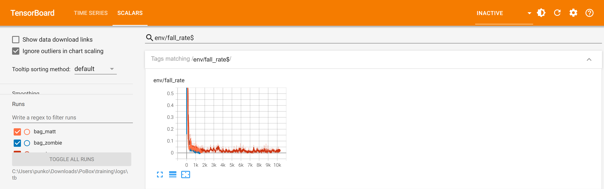
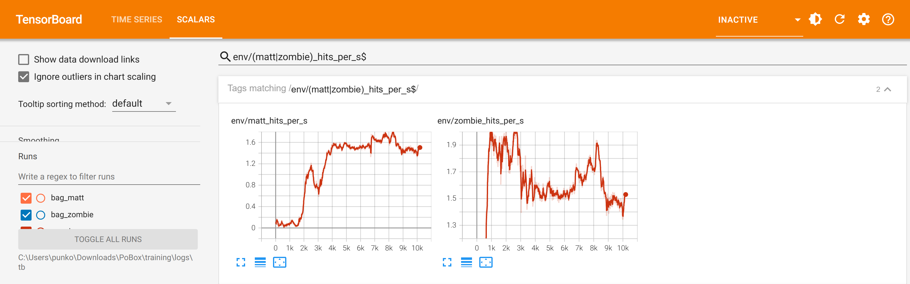
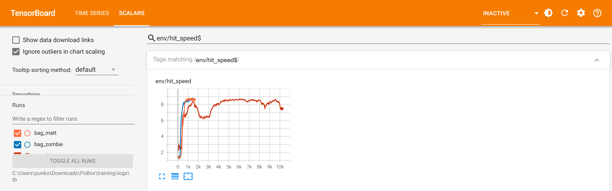
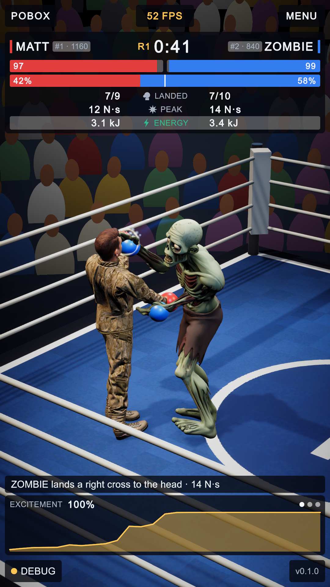
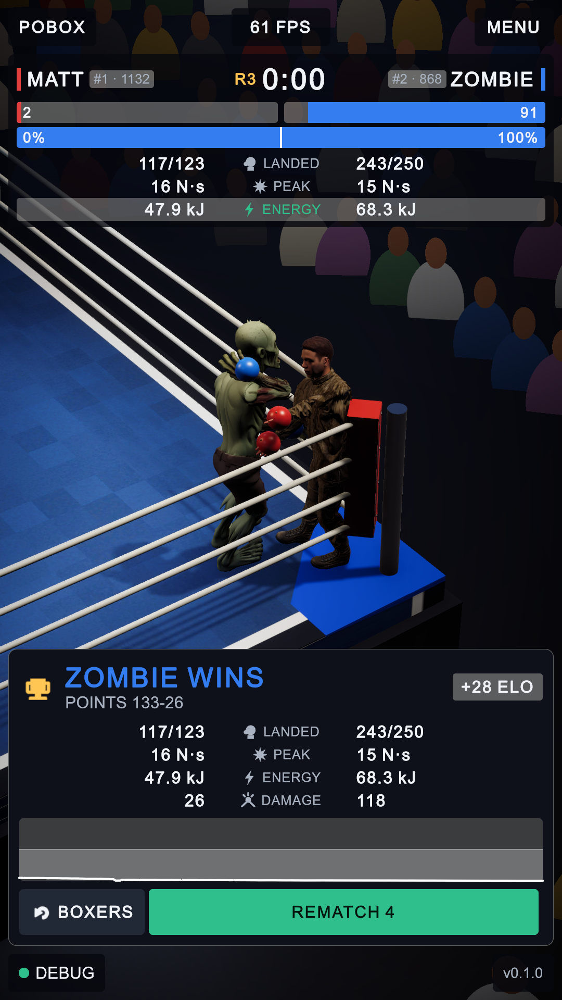

Matt v Zombie: the eight-hour training run
1 October 2026 · 09:48 to 17:39 · MuJoCo Warp on the laptop's RTX 2060 · the three TensorBoard charts that matter, each explained three ways
Both fighters finished training able to stand, close the distance and trade punches for a full twelve-second episode without falling, and they now box each other in the Unity game. Zombie is the better of the two: it lands as often as Matt and its glove arrives faster.
| Stage | Length | How it ended |
|---|---|---|
| Matt and the heavy bag | 45 min | falls in 2% of episodes; 1.96 punches a second landing at 8.6 m/s |
| Zombie and the heavy bag | 45 min | falls in under 1%; 2.09 punches a second at 8.7 m/s |
| The two in one ring, a policy each | 381 min | no falls; each lands about 1.5 punches a second; Matt's arrive at 6.2 m/s, Zombie's at 8.8 m/s; no knockdowns |
The match stage ran 10,193 learning steps and just over a billion fighter-steps of physics. Checked afterwards with the final policies acting without any exploration noise: 50 episodes, 600 seconds, no falls.
Chart 1 · How often somebody falls over

TensorBoard, env/fall_rate: the share of episodes that ended because a fighter fell. Orange and blue are the two bag stages, red is the match. Across is learning steps.
FOR A TODDLER
At first they fall down every time. Then they learn to stay up. The line goes down to the floor and stays there. Down is good.
FOR A CHILD
Each try lasts twelve seconds. The line shows how many tries out of a hundred ended with someone on the floor. It starts at a hundred, because a beginner topples straight away, and drops to one or two. The little bumps afterwards are the fighters trying new things and sometimes overdoing it.
FOR AN ADULT
The fraction of episodes terminated by a fall (pelvis under 60% of standing height, or tilted past about 66 degrees). On the bag both fighters are under 5% within about five minutes. The match starts again from 100%: a fighter that learned on a bag leans on what it hits, and an opponent moves. It is back under 10% in twenty minutes and at 0 to 3% for the remaining six hours, with exploration noise still switched on.
Chart 2 · How many punches each fighter lands

TensorBoard, env/matt_hits_per_s and env/zombie_hits_per_s, match stage only: punches landed per second by each fighter.
FOR A TODDLER
Up means lots of punches. Zombie punches straight away. Matt stands still for a long time, and then he starts punching too.
FOR A CHILD
Zombie works out how to hit Matt in the first few minutes. Matt does almost nothing for about an hour: he has learned that going near Zombie gets him knocked over, so he just stands and takes it. Then he finds a punch that works, and after that the two lines sit at about the same height: one and a half punches every second, each.
FOR AN ADULT
Both policies lost their bag-stage punch in the first minutes of the match, when every exchange ended in a fall. Zombie recovered it by about minute 20. Matt stayed under 0.2 hits a second from minute 15 to minute 67, a stable passive strategy (standing in range is rewarded; being hit costs less than falling), passed one hit a second at minute 79 and matched Zombie by minute 180. Zombie's rate falls from about 2.0 to 1.5 as Matt begins to hit back.
Chart 3 · How hard the punches land

TensorBoard, env/hit_speed: how fast the glove is closing on its target when it lands, in metres per second, averaged over both fighters. Capped at 9, about what a trained boxer's glove does.
FOR A TODDLER
Up means a big punch. Down means a little tap. They learn big punches, then little taps for a while, then big punches again.
FOR A CHILD
On the bag both fighters learn to hit hard, about as fast as a real boxer's glove. In the ring the line dips, because Matt's first punches at Zombie are slow pokes and they pull the average down. As Matt gets braver the line climbs back up.
FOR AN ADULT
Closing speed along the surface normal at the moment of landing, the quantity the hit reward is proportional to. Both bag stages plateau at 8.6 to 8.7 m/s. The match dips to about 6.3 m/s around learning step 2,500, when Matt's tentative punches (2 to 4 m/s) enter the average, and recovers to 8.4 by step 4,500. It ends at 7.5: Zombie holds 8.8, but Matt's falls from 8.2 to 6.2 over the last hundred minutes while his rate stays the same. I do not know why.
All the runs side by side
| Run | Length | Falls | Punches landed | Glove speed | What it was |
|---|---|---|---|---|---|
| Rehearsal 1, bag | 12 min | 1% | 17.7 /s | 11.4 m/s | a cheat: rubbing the glove up and down the bag |
| Rehearsal 2, bag | 10 min | 3% | 5.4 /s | 8.0 m/s | another: five quick pats a second |
| Rehearsal 4, bag | 21 min | 0% | 1.9 /s | 8.6 m/s | real punches, after the rules were tightened |
| Rehearsal 3, spar | 16 min | 13% | 1.5 /s | 8.2 m/s | fighters propped on each other |
| Rehearsal 4, spar | 49 min | 0% | 1.6 /s | 8.7 m/s | one policy on both sides, stand-in rig |
| This run, Matt on the bag | 45 min | 2% | 2.0 /s | 8.6 m/s | the owner's mesh |
| This run, Zombie on the bag | 45 min | 1% | 2.1 /s | 8.7 m/s | the owner's mesh |
| This run, the match | 381 min | 0% | 1.5 /s each | 6.2 and 8.8 m/s | two bodies, two policies |
The rehearsals were on a stand-in rig the night before and their TensorBoard data was cleared when this run started, as the house rule asks; their numbers here are from the status files the trainer keeps in training/logs.
In the game: before and after
 A
B
C
A
B
C

1 2 3 4 5- A stand-in body: capsules and spheres.
- Moved by a hand-written script, and held upright by a hidden spring on its hips and a string on its chest.
- Six invented names; none of them had been trained.
- Matt: the owner's mesh on a body built from its own skeleton, 1.81 m and 79.5 kg. Nothing holds him up.
- Zombie, the same way: 80.2 kg, hips 9 cm higher. Each is driven only by its policy, fifty decisions a second.
- The names are the fighters'. The app now starts on a screen where the two are chosen (see the boxer-menu report).
- Nearly every punch thrown lands: these two stand in range and trade. Nobody defends yet.
- The strength of a punch is the glove's closing speed times the 2.2 kg behind a glove, as in training.

Three rounds, no knockdowns, Zombie on points, 133 to 26. Zombie landed 243 of 250, Matt 117 of 123. Matt finished with 2 of his 100 health.
The scorekeeper's numbers were set from these two policies sparring for five minutes on the clock: a punch under 4.9 N·s does not count, the busier fighter takes about 100 health off the other over a bout, the hardest 4% of punches stagger, and the hardest 0.8% put a tired fighter down.
One bout is one bout. In sparring just before it the two landed at the same rate, 1.5 a second each.
The thing that nearly did not work
The policies did not survive being moved into Unity's own physics. With Unity's bodies matching MuJoCo's at rest to the millimetre, and the policies' inputs matching to three decimal places, the same two policies still fell over in most episodes.
| Same policies, training's twelve-second episodes | Episodes ending in a fall |
|---|---|
| MuJoCo Warp, where they were trained | 0% |
| MuJoCo, the plain C library | 0% |
| Unity's physics (three runs) | 69%, 79%, 89% |
| Unity, with the fight stepped by MuJoCo inside the game | 0% |
So the game loads MuJoCo as a library and steps the fight in it; the bodies on screen follow. It is exact, and it has a price: the library in the project is the Windows one, so a phone build would fall back to Unity's physics and the falls.
Not right yet
- Nobody defends. Both fighters stand in range and trade.
- No knockdowns in training at all, and none in the bout above.
- Matt's punches lost speed in the last part of the run; the cause is not known.
- Matt's passive hour cost about an eighth of the run.
- There is no get-up policy: after a count, a fighter is stood back up in its guard.
- The game needs Windows to run the trained fighters properly.